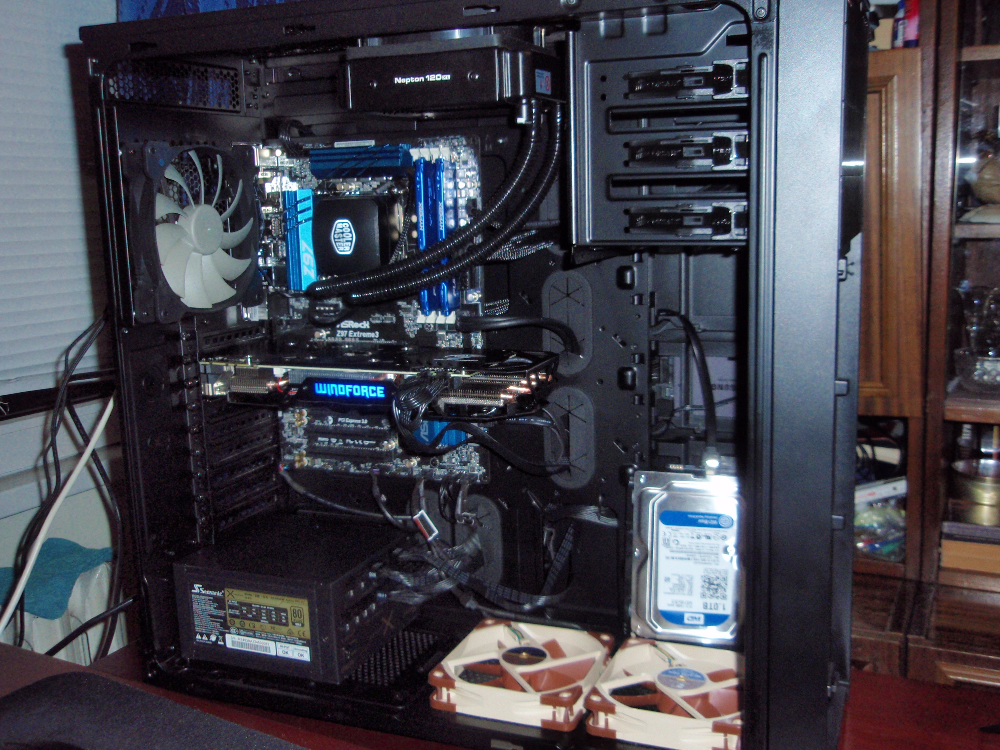
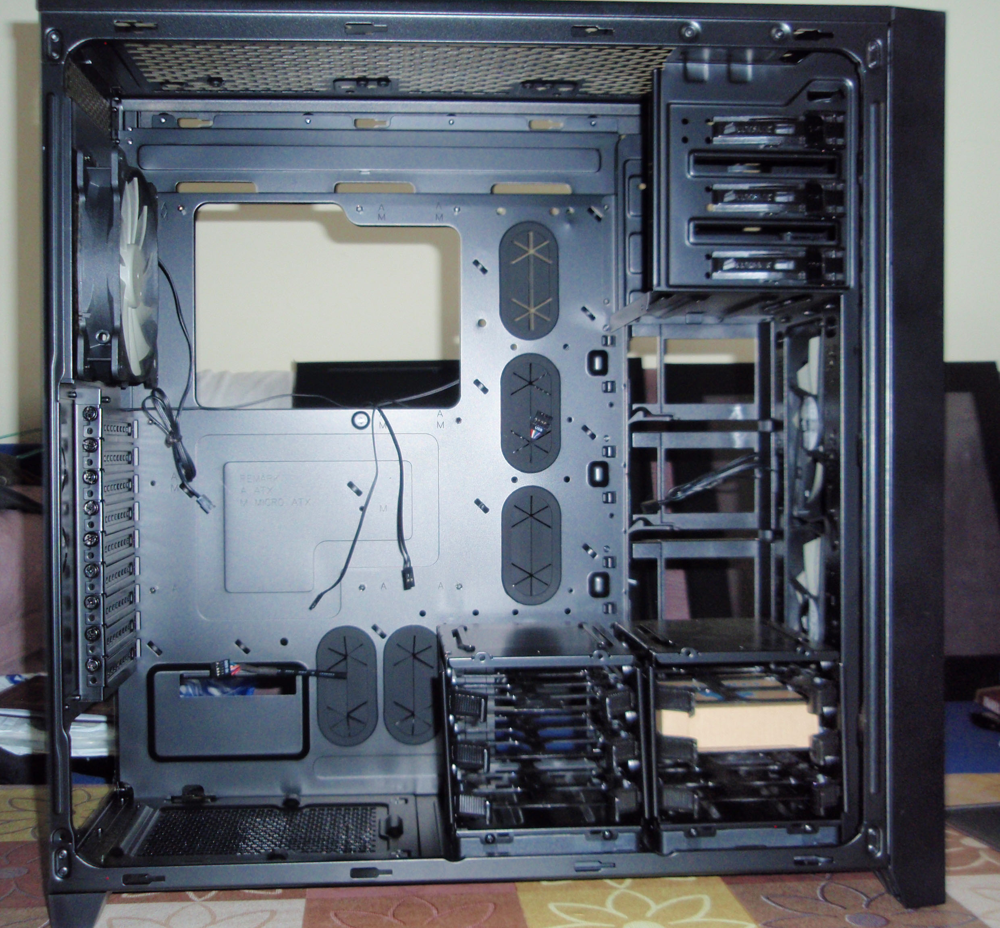

My Workstation/Gaming PC
PC Parts
-
CPU
Intel i7 4790K, 4.4GHz
-
CPU Cooler
COOLER MASTER Nepton 120XL
-
Motherboard
ASROCK Z97 EXTREME3
-
RAM
Kingston HyperX FURY 2X8GB DDR3 1866Mhz
-
GPU
Gigabyte GTX 970 G1 Gaming 3.5GB+0.5GB*
-
SSD
Samsung 840 Evo 250GB
-
HDD
Western Digital Blue 1TB
-
Case
Corsair Obsidian 750D
-
PSU
Seasonic X 650W Gold 80+

This was my dream since I was a child - to build my own bad ass PC :)
Again I spent quite some time in researching and picking the right parts.
One thing I knew for sure - I want a case that will be able to fit a couple of radiators for water cooling. And not only to fit
just the rads, but also to have space left for the other components so they are not tucked too close together. Another thing I wanted
the case to have is dust filters - yeah, it will reduce the airflow, but it will keep my system nice and clean and easier to maintain.


Corsair Obsidian 750D is really huge case and there is plenty of room for cable management. On the front you will notice that there is a solid piece of brushed alluminum, which can be removed and behind it, there is a dust filter and behind the filter, there are two 140mm fans pulling air.

Honestly this is a big restriction and the airflow isn't that great, but I don't really mind that. This is one reason I have installed 2 additional 120mm AF Noctuas pulling air from the bottom of the case, on the place of the HDD cages. Another really cool thing, at least for me, is that
I can install the SSDs vertically on the back side of the case (up to 4). You can see the SSD mounted here (in the upper right corner). I had a hard time thinking where to install the HDD, because I removed the HDD cages, so that I increase the airflow.
The first thing I thought is to install it up in the DVD bay, but I couldn't do it without modding, so I had to find another place. So I put the HDD in the HDD slide and secured it with zip ties to the back of the case.
For my build I picked a WD Blue and not Black - Why ? Well I although the Blacks are fast, they are loud and I wanted to get something more quiet. And honestly I don't see or feel any difference in the speed between black and blue. I use my HDD for games and data and I am happy for my choice. Maybe if you use a HDD for OS it will still be better to get a Black.
I use my SSD for OS and programs. I am happy with it so far. I picked Samsung because at the end of the day it seemed like the best choice for that price range. Also it is nice that I got 250GB and not 120, because I fill it really fast, and I may still put some game on it, to help with loading.
Back onto the CPU and Motherboard ...
I've decided to get the Haswell refresh i7 4790k. The stock clock is 4.0GHz and the turbo boost clock is 4.4Ghz. That is really bad ass out of the box clock, compared to the i7 4770k, which is at 3.5Ghz and 3.9Ghz turbo boost. I didn't overclock it yet, but I think I will, just to see how far it can go. I've seen quite a few things on the internet regarding the temperatures of this processor. They stated that they were high
but this didn't stop me from buying and testing it myself. So when everything was ready I run Prime 95 for 5 mins. Hell this thing reached 90c degrees! I didn't tweak any settings, everything was stock. After that I entered BIOS and set the CPU Core Voltage to "Adaptive" and the CPU Cache Voltage to "Adaptive" too. I also limited the voltage to about 1.16v-1.2v. I ran Prime 95 again and this time it never reached more
than 61c degrees. I also installed Intel(R) Extreme Tuning Utility and did some tests with it. If interested, you can look it up in internet and see what settings to apply, so you keep your CPU cooler without losing performance. After a few hours of tweaking I was happy that finally I got my CPU ready to go!
For the motherboard yet again, I choose ASRock!
I liked the layout of the board the most, compared to the other brands (the SATA ports are right-angle, the fan headers are good). There is also SLI support because I am planning to add 2nd GTX 970 GPU in the future. This is also "K" ready motherboard, so I can easyily clock my CPU even more! Another thing to keep in mind if you are going to use a big air cooler, like Noctua 15D, it is a good idea to have space
between the cooler and the GPU. ASRock Z97 Extreme 3 has additional PCI-E slot between the CPU socket and the 1st PCI-E x16 slot, so that gives nice spacing.
As you can see this ATX Z97 motherboard looks really small in the 750D case :)

 The Cooler Master Nepton series are great coolers and from what I've seen and read they are among the top of All-In-One liquid coolers.
The pump is nice and quiet and the rad is 38mm thinck. It usually comes with 2 fans for push-pull configuration, but I couldn't
install the second fan, because it was interfering with the heatsinks/RAM of the motherboard. I made a pull config, which is
easier to clean. The push-pull config would give you at most 1-2c degrees lower temps and not always. And it would be much harder to clean the dust. It was not hard but also not that easy to install the cooler. I found the tubing a bit too long, which is why I put it this way.
For RAM I picked Kingston, because I liked the low profile blue heatsik and it would match my white-blueish theme.
The Cooler Master Nepton series are great coolers and from what I've seen and read they are among the top of All-In-One liquid coolers.
The pump is nice and quiet and the rad is 38mm thinck. It usually comes with 2 fans for push-pull configuration, but I couldn't
install the second fan, because it was interfering with the heatsinks/RAM of the motherboard. I made a pull config, which is
easier to clean. The push-pull config would give you at most 1-2c degrees lower temps and not always. And it would be much harder to clean the dust. It was not hard but also not that easy to install the cooler. I found the tubing a bit too long, which is why I put it this way.
For RAM I picked Kingston, because I liked the low profile blue heatsik and it would match my white-blueish theme.

 Again there were plenty of brands to choose from considering GPU - ASUS, Gigabyte, MSI, EVGA.
Gigabyte seemed to be the one that clocks highest and to run coolest. I really had hard time deciding between EVGA and Gigabyte but at the end I wanted to try something new, so I did buy Gigabyte.
* I already knew that the GTX 970 series doesn't have fully 4GB VRAM on max speed as advertised by NVidia. It actually has 2 segments. One segment of 3.5GB VRAM which can be accessed at max speed and another segment of 0.5GB VRAM which is accessed at much slower
speed. This appears to be a problem when the game or application utilizes more than 3.5GB of VRAM - it starts to throttle and the gameplay becomes not that smooth. I don't really need more than 3.5GB of VRAM, so I decided to go with GTX 970 and later add another one.
Two GTX 970s cost about the same as single GTX 980 and the 970s beat the 980 in all the games/benchmarks I've seen.
Again there were plenty of brands to choose from considering GPU - ASUS, Gigabyte, MSI, EVGA.
Gigabyte seemed to be the one that clocks highest and to run coolest. I really had hard time deciding between EVGA and Gigabyte but at the end I wanted to try something new, so I did buy Gigabyte.
* I already knew that the GTX 970 series doesn't have fully 4GB VRAM on max speed as advertised by NVidia. It actually has 2 segments. One segment of 3.5GB VRAM which can be accessed at max speed and another segment of 0.5GB VRAM which is accessed at much slower
speed. This appears to be a problem when the game or application utilizes more than 3.5GB of VRAM - it starts to throttle and the gameplay becomes not that smooth. I don't really need more than 3.5GB of VRAM, so I decided to go with GTX 970 and later add another one.
Two GTX 970s cost about the same as single GTX 980 and the 970s beat the 980 in all the games/benchmarks I've seen.

 As I said in my previous post, Seasonic is the way to go for PSU, but this time I got a fully modular one!
It came with a nice packaging, in a nice bag. There are no useless cables around and it helps for a cleaner look.
It is really cool to have a modular PSU, but it comes at a higher cost, so it's your call!
There are, however, some things that I will point out and wasn't pleased with. There were only right angle SATA power cables! Seriously? I understand that this is more comfortable when you stack your drives in the drive cages, but when my SSDs are placed on the back
of the case, the cable management becomes really hard with that stacked right angle cables!
As I said in my previous post, Seasonic is the way to go for PSU, but this time I got a fully modular one!
It came with a nice packaging, in a nice bag. There are no useless cables around and it helps for a cleaner look.
It is really cool to have a modular PSU, but it comes at a higher cost, so it's your call!
There are, however, some things that I will point out and wasn't pleased with. There were only right angle SATA power cables! Seriously? I understand that this is more comfortable when you stack your drives in the drive cages, but when my SSDs are placed on the back
of the case, the cable management becomes really hard with that stacked right angle cables!
Plans for future upgrades:
- Add a second GTX 970
- Do a full custom water cooling
- Upgrade to 32GB of RAM, but not really important